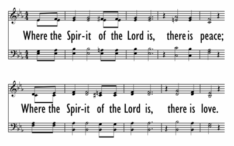

|
|
【只要真神聖靈同在】 |
|
Where the Spirit of the Lord is |
只要真神聖靈同在，有平安；
|
|
 |
|
|
|
|

- Where the Spirit of the Lord Is composed in 1973 by Stephen R. Adams and is published in 14 hymnals https://youtu.be/Eaf4x8LveD4
- Where the Spirit of the Lord Is (#019 All the Best Songs of Praise & Worship) Stephen R Adams https://youtu.be/kJHqf8ZKM8c
| Text: | Where the Spirit of the Lord Is |
| Author: | Stephen R. Adams |
| Tune: | ADAMS |
| Composer: | Stephen R. Adams |
| Short Name: | Steve Adams |
| Full Name: | Adams, Steve, 1943- |
| Birth Year: | 1943 |
Adams, Stephen R., born 1943- USA Rhode Island, Woonsocket; organist,
hymn/gospel writer, 1950- aged 7 he began to study music, studied at Andover
Academy in Andover Massachusetts; 1960- he was organist at the church in
Woonsocket where his father was pastor; after 1960 the family moved to Indiana
where he was church organist, he studied greek philosophy and english literature
at Indiana University in Bloomington; by 1974 he had settled in Urbana Ohio and
was organist/choirmaster of a church in Xenia Ohio ; He married Janet 'Jane';
children Craig and Chris.
https://www.youtube.com/watch?v=Eaf4x8LveD4
Tune Information
| Title: | ADAMS (Adams) |
| Composer: | Steve Adams (1973) |
| Meter: | Irregular |
| Incipit: | 12332 23343 21122 |
| Key: | E♭ Major |
| Copyright: | © 1973 Pilot Point Music (admin. by the The Copyright Co., Nashville, TN). |
何處若有聖靈同在
Where the Spirit of the
Lord Is
何處若有聖靈同在–有平安；
何處若有聖靈同在–有愛心。
黑暗籠罩主賜你亮光，
生命有希望，
聖靈同在有安慰和力量，
聖靈同在–有平安。
艾登司（Stephen R.
Adams, 1943 - ）在七歲時就開始想寫作福音詩歌。 他的鋼琴教師麗泰是一位牧師的遺孀，她因丈夫驟逝，需要維持一家生計而授琴。 艾登司的父親也是一位牧師，他將家中的客室及鋼琴讓她每週使用一日作授課之用。麗泰每週三來他們家，課後與他們一家同進晚餐參加禱告會。 她藉寫詩歌來紓解內心的憂傷，每當她帶來一首詩歌時，他們就試唱。 這啟迪了艾登司的童心，也希望自己有此恩賜。 艾登司十三歲時，有一次參加夏令會，在營地的鋼琴上，作了第一首詩歌。 他在少年期間所作詩歌並不多，但他想用音樂傳福音的心志日益強烈。 他經常在教會及退休會中司琴及歌唱，但他完全獻身于主是在十七歲那年的一個主日早上。那年夏天，他高中畢業，雙親正巧遷居印第安那州牧會。 他因獲得一份「
主耶穌我曾應許事奉祢到永久，
求主常與我親近，作我良師密友；
若主常與我同在，我必不怕戰場；
若主常領我行路，我必不至迷亡。
（見p.38）
崇拜後，他走到街口，就對 神說：「這首歌是我的委身。」
艾登司在廿六歲時獲得文學碩士，哲學學士學位。 週一至週五，他在一初中教英文，每個週末，他隨福音詩歌歌唱家白萊恩（Gene Braun）到處舉行音樂會。 二年後，他感到該在教書和福音音樂中作一個抉擇。 一天課後，他在擦去黑板上所寫的講義時，他感到主在對他說：「我要你寫些不會擦去的東西。」於是他真誠地開始了廿年來醞釀的心願。 他的詩歌多數是信心的體驗，是他對 神在他生命中作為的回應。 1974年四月，他駛車去俄亥俄州時作音樂傳道人時，半途中見一團黑雲迎面而來，他知道他躲不過這旋風，於是急速停車，奔入一傢俱店，他蹲在地上，將一沙發倒覆在身上。 旋風吹毀了這幢房屋，風停之後，他費了好大的勁，才自瓦礫中爬出來。 這個經驗使他寫了「風暴中的平安」（Peace in the Midst of the Storm）。 本詩歌是他和白萊恩在一個奮興會中，聖靈特別動工，在決志時，有十多對夫婦走向講台，他在禱告時輕輕伴奏，這首詩歌自然流出，於是他左手彈奏，右手寫下歌詞。 他感到這是他最蒙祝福的時刻。
Where the Spirit of the Lord Is -- Stephen R. Adams

Maybe he believed in the significance or the perfection of the number seven? After all, if Stephen R. Adams had read his bible many times, including some of its first words, he might have concluded that God thought the same way in the very beginning. And Stephen might have surmised that he was in the same place as Him when he described “Where the Spirit of the Lord Is” in 1973, even as a 30-year-old living in middle America on planet Earth (we’ll assume he was somewhere in Indiana, where one source suggests he was living until arriving in Urbana, Ohio in 1974). From where had Stephen gathered his thoughts about the impact of the Spirit’s presence? He had probably heard lots of presentations on this and related subjects from childhood, so by his 30th year, Stephen must have already had his own experiences with and impressions about this Spirit and what He provides. See if you agree with what he says about this.
We know a few things about Stephen R. Adams and his background that give us some clues to the circumstances surrounding the one-verse poem-song that he gave the world in 1973. Though the precise context of that time in 1973 is unknown, we know that he was the son of a pastor, had studied and played organ church music practically his whole life, was schooled in Greek philosophy and English literature in college, and lived in Massachusetts and Indiana up until 30 years of age. His own father’s sermons must have played a large role in young Stephen’s upbringing and awareness of God’s impact on life. This life would have been filled with the church music that Stephen played weekly, something that apparently stayed with him into adulthood, including when he eventually moved to western Ohio where he was an organist and choirmaster in a church in Xenia, near Urbana. ‘Where the Spirit…’ was apparently not Stephen’s first effort at songwriting, something he’d been doing since at least 1968. He had seven thoughts about the Spirit in this brief verse, things he had probably heard while sitting under the sound of his father’s voice, and perhaps experienced himself while seated at an organ or teaching a choir. These must have made Stephen’s life full and complete, these seven gifts from the Spirit. ‘Peace’, ‘love’, ‘comfort’, ‘light’, ‘life’, ‘help’, and ‘power’ certainly do not exhaust what believers receive from Him, but they felt especially notable to Stephen Adams when he summed up His impact on his own life that day. Did it occur to Stephen that other 7’s in scripture are notable? God resting on the 7th day when creating (Genesis 1-2); Jesus’ 7 statements while on the cross (Matthew 27, Luke 23, John 19); Jesus’ metaphorical descriptions of Himself (John 6-15); and many, many others. One doesn’t have to superstitiously acknowledge some magic about number 7 to accept that God makes things full and complete (perhaps with other numbers, like 3, as in the Trinity), even perfect when He’s involved.
Stephen Adams had concluded that he was in a good spot in 1973. What moved him to craft a song of devotion to the Spirit? Is it too much conjecture to say that the Spirit Himself was involved with the words and the music that Adams penned? No specific date or time of day is really relevant when He’s engaged, since He lives inside of a believer, especially a songwriter. Others have that One inside them, including one named David (1 Sam. 13:14; Acts 13:22), even if he did make lots of mistakes and even stray from God egregiously at times. But, as Stephen Adams probably knew, when He’s been with you, you tend to know Him and what He provides. He’s hard to ignore, in this respect. Stephen knew seven truths about His presence. Do your insides tell you that you possess those things today?
See brief information on the author here: http://composers-classical-music.com/a/AdamsStephenR.htm
Some biblical concepts re: the number 7, see here: https://www.christianity.com/wiki/bible/what-is-the-biblical-significance-of-the-number-7.html